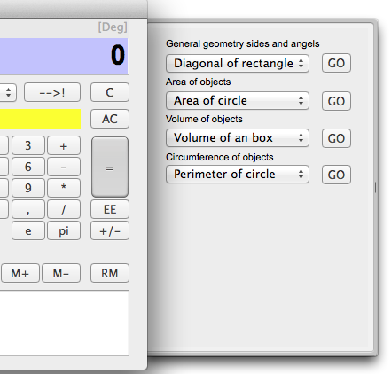

Geometric functions
Choose the "geometry functions" in the functions popup, and a new drawe opens.

This has four groups.
General geometry sides and angles.
Area of objects
Volume of objects
Circumference of objects.
General geometry sides and angles.
Show
Area of objects
Show
Volum of objects functions
Show
Circumference of objects.
Show
Related topics
Functions and operands
How to use the formula library